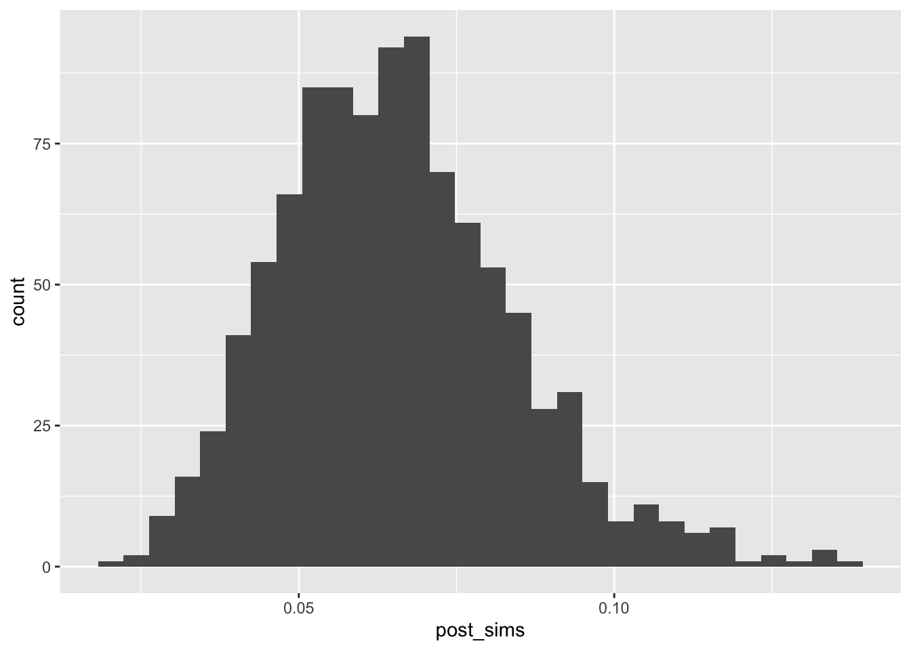

Chapter 2 Week 2: Bayesian Inference
This week, we introduce the following tools.
- engine Bayesian inference
- distributions normal, uniform
- confidence intervals posterior simulation, Bayesian credible intervals, percentile intervals.
- quantities of interest transforming posterior simulations
- evaluating models posterior predictive distribution
2.1 Bayesian Inference
Bayesian inference follows a simple recipe:
- Choose a distribution for the data.
- Choose a distribution to describe your prior beliefs.
- Update the prior distribution upon observing the data by computing the posterior distribution.
In simple examples, we can implement this process analytically and obtain a closed-form posterior. In most applied cases, we can only sample from the posterior distribution, but this turns out to work almost as well.
2.1.1 Mechanics
Suppose a random sample from a distribution \(f(x; \theta)\) that depends on the unknown parameter \(\theta\).
Bayesian inference models our beliefs about the unknown parameter \(\theta\) as a distribution. It answers the question: what should we believe about \(\theta\), given the observed samples \(x = \{x_1, x_2, ..., x_n\}\) from \(f(x; \theta)\)? These beliefs are simply the conditional distribution \(f(\theta \mid x)\).
By Bayes’ rule, \(\displaystyle f(\theta \mid x) = \frac{f(x \mid \theta)f(\theta)}{f(x)} = \frac{f(x \mid \theta)f(\theta)}{\displaystyle \int_{-\infty}^\infty f(x \mid \theta)f(\theta) d\theta}\).
\[ \displaystyle \underbrace{f(\theta \mid x)}_{\text{posterior}} = \frac{\overbrace{f(x \mid \theta)}^{\text{likelihood}} \times \overbrace{f(\theta)}^{\text{prior}}}{\displaystyle \underbrace{\int_{-\infty}^\infty f(x \mid \theta)f(\theta) d\theta}_{\text{normalizing constant}}} \] There are four parts to a Bayesian analysis.
- \(f(\theta \mid x)\). “The posterior;” what we’re trying to find. This distribution models our beliefs about parameter \(\theta\) given the data \(x\).
- \(f(x \mid \theta)\). “The likelihood.” This distribution model conditional density/probability of the data \(x\) given the parameter \(\theta\). We need to invert the conditioning in order to find the posterior.
- \(f(\theta)\). “The prior;” our beliefs about \(\theta\) prior to observing the sample \(x\).
- \(f(x) =\int_{-\infty}^\infty f(x \mid \theta)f(\theta) d\theta\). A normalizing constant. Recall that the role of the normalizing constant is to force the distribution to integrate or sum to one. Therefore, we can safely ignore this constant until the end, and then find proper normalizing constant.
It’s convenient to choose a conjugate prior distribution that, when combined with the likelihood, produces a posterior from the same family as the prior.
The resulting distribution is a complete and correct summary of our updated beliefs about the parameters.
2.1.2 Posterior Summaries
If we want to summarize the posterior distribution, then we can (though we lose some information).
First, we might summarize the distribution using a single point to make a “best guess” at the parameter of interest. We have three options:
- The posterior mean. The posterior mean minimizes a squared-error loss function.
- The posterior median: The posterior median minimizes an absolute loss function where the cost of guessing \(a\) when the truth is \(\alpha\) is \(|a - \alpha|\). Intuitively, there’s a 50% chance that \(\pi\) falls above and below the posterior median.
- The posterior mode: The posterior mode is the most likely value of \(\pi\), so it minimizes a loss function that penalizes all misses equally.
Second, we might find an \(100(1 - \alpha)\%\) credible interval, by finding an interval that that integrates to \((1 - \alpha)\). That is, a region that has a \(100(1 - \alpha)\%\) chance of containing the parameter. This interval is not unique; there are many. However, one \(100(1 - \alpha)\%\) credible interval is the \(100(1 - \alpha)\%\) percentile credible interval. Construct this interval by finding the \(100\frac{\alpha}{2}th\) percentile and the \(100(1 - \frac{\alpha}{2})th\) percentile. For example, if we want a 90% credible interval, we would find the 5th and 95th percentiles.
2.1.3 Posterior Simulation
In some cases, we have an analytical solution for the posterior—we can write down the equation for the posterior. But in most cases, we cannot write down the posterior. Perhaps unexpectedly, it is usually easier to sample from the distribution that write down the posterior in closed form.
But notice that the samples are almost as good as the closed-form solution. We can sample from the distribution many times and then draw the histogram, compute the average, and find the percentiles. Except for sampling error that we can make arbitraryily small, these correspond to the posterior density, the posterior mean, and the 95% (percentile) credible interval.
2.2 Example: Bernoulli
As a running example, we use the toothpaste cap problem:
We have a toothpaste cap–one with a wide bottom and a narrow top. We’re going to toss the toothpaste cap. It can either end up lying on its side, its (wide) bottom, or its (narrow) top.
We want to estimate the probability of the toothpaste cap landing on its top.
We can model each toss as a Bernoulli trial, thinking of each toss as a random variable \(X\) where \(X \sim \text{Bernoulli}(\pi)\). If the cap lands on its top, we think of the outcome as 1. If not, as 0.
Suppose we toss the cap \(N\) times and observe \(k\) tops. What is the posterior distribution of \(\pi\)?
2.2.1 The Likelihood
According to the model \(f(x_i \mid \pi) = \pi^{x_i} (1 - \pi)^{(1 - x_i)}\). Because the samples are iid, we can find the joint distribution \(f(x) = f(x_1) \times ... \times f(x_N) = \prod_{i = 1}^N f(x_i)\). We’re just multiplying \(k\) \(\pi\)s (i.e., each of the \(k\) ones has probability \(\pi\)) and \((N - k)\) \((1 - \pi)\)s (i.e., each of the \(N - k\) zeros has probability \(1 - \pi\)), so that the \(f(x | \pi) = \pi^{k} (1 - \pi)^{(N - k)}\).
\[ \text{the likelihood: } f(x | \pi) = \pi^{k} (1 - \pi)^{(N - k)}, \text{where } k = \sum_{n = 1}^N x_n \\ \]
2.2.2 The Prior
The prior describes your beliefs about \(\pi\) before observing the data.
Here are some questions that we might ask ourselves the following questions:
- What’s the most likely value of \(\pi\)? Perhaps 0.15.
- Are our beliefs best summarizes by a distribution that’s skewed to the left or right? To the right.
- \(\pi\) is about _____, give or take _____ or so. Perhaps 0.17 and 0.10.
- There’s a 25% chance that \(\pi\) is less than ____. Perhaps 0.05.
- There’s a 25% chance that \(\pi\) is greater than ____. Perhaps 0.20.
Given these answers, we can sketch the pdf of the prior distribution for \(\pi\).
Now we need to find a density function that matches these prior beliefs. For this Bernoulli model, the beta distribution is the conjugate prior. While a conjugate prior is not crucial in general, it makes the math much more tractable.
So then what beta distribution captures our prior beliefs?
There’s a code snippet here to help you explore different beta distributions.
After some exploration, I find that setting the parameters \(\alpha\) and \(\beta\) of the beta distribution to 3 and 15, respectively, captures my prior beliefs about the probability of getting a top.
 The pdf of the beta distribution is \(f(x) = \frac{1}{B(\alpha, \beta)} x^{\alpha - 1}(1 - x)^{\beta - 1}\). Remember that \(B()\) is the beta function, so \(\frac{1}{B(\alpha, \beta)}\) is a constant.
The pdf of the beta distribution is \(f(x) = \frac{1}{B(\alpha, \beta)} x^{\alpha - 1}(1 - x)^{\beta - 1}\). Remember that \(B()\) is the beta function, so \(\frac{1}{B(\alpha, \beta)}\) is a constant.
Let’s denote our chosen values of \(\alpha = 3\) and \(\beta = 15\) as \(\alpha^*\) and \(\beta^*\). As we see in a moment, it’s convenient distinguish the parameters in the prior distribution from other parameters.
\[ \text{the prior: } f(\pi) = \frac{1}{B(\alpha^*, \beta^*)} \pi^{\alpha^* - 1}(1 - \pi)^{\beta^* - 1} \]
2.2.3 The Posterior
Now we need to compute the posterior by multiplying the likelihood times the prior and then finding the normalizing constant. \[ \text{the posterior: } \displaystyle \underbrace{f(\pi \mid x)}_{\text{posterior}} = \frac{\overbrace{f(x \mid \pi)}^{\text{likelihood}} \times \overbrace{f(\pi)}^{\text{prior}}}{\displaystyle \underbrace{\int_{-\infty}^\infty f(x \mid \pi)f(\pi) d\pi}_{\text{normalizing constant}}} \\ \] Now we plug in the likelihood, plug in the prior, and denote the normalizing constant as \(C_1\) to remind ourselves that it’s just a constant.
\[ \displaystyle f(\pi \mid x) = \frac{\left[ \pi^{k} (1 - \pi)^{(N - k) }\right] \times \left[ \frac{1}{B(\alpha^*, \beta^*)} \pi^{\alpha^* - 1}(1 - \pi)^{\beta^* - 1} \right]}{ C_1} \\ \]
\[ \text{the posterior: } \displaystyle \underbrace{f(\pi \mid x)}_{\text{posterior}} = \frac{\overbrace{\left[ \pi^{k} (1 - \pi)^{(N - k) }\right] }^{\text{likelihood}} \times \overbrace{ \left[ \frac{1}{B(\alpha^*, \beta^*)} \pi^{\alpha^* - 1}(1 - \pi)^{\beta^* - 1} \right] }^{\text{prior}}}{\displaystyle \underbrace{C_1}_{\text{normalizing constant}}} \\ \]
Now we need to simplify the right-hand side.
First, notice that the term \(\frac{1}{B(\alpha^*, \beta^*)}\) in the numerator is just a constant. We can incorporate that constant term with \(C_1\) by multiplying top and bottom by \(B(\alpha^*, \beta^*)\) and letting \(C_2 = C_1 \times B(\alpha^*, \beta^*)\).
\[ \text{the posterior: } \displaystyle \underbrace{f(\pi \mid x)}_{\text{posterior}} = \frac{\overbrace{\left[ \pi^{k} (1 - \pi)^{(N - k) }\right] }^{\text{likelihood}} \times \left[ \pi^{\alpha^* - 1}(1 - \pi)^{\beta^* - 1} \right] }{\displaystyle \underbrace{C_2}_{\text{new normalizing constant}}} \\ \]
Now we can collect the exponents with base \(\pi\) and the exponents with base \((1 - \pi)\).
\[ \text{the posterior: } \displaystyle \underbrace{f(\pi \mid x)}_{\text{posterior}} = \frac{\left[ \pi^{k} \times \pi^{\alpha^* - 1} \right] \times \left[ (1 - \pi)^{(N - k) } \times (1 - \pi)^{\beta^* - 1} \right] }{ C_2} \\ \] Recalling that \(x^a \times x^b = x^{a + b}\), we combine the powers.
\[ \text{the posterior: } \displaystyle \underbrace{f(\pi \mid x)}_{\text{posterior}} = \frac{\left[ \pi^{(\alpha^* + k) - 1} \right] \times \left[ (1 - \pi)^{[\beta^* + (N - k)] - 1} \right] }{ C_2} \\ \] \[ \displaystyle f(\theta \mid x) = \frac{f(x \mid \theta) \times f(\theta)}{\displaystyle \int_{-\infty}^\infty f(x \mid \theta)f(\theta) d\theta} \]
Because we’re clever, we notice that this is almost a beta distribution with \(\alpha = (\alpha^* + k)\) and \(\beta = [\beta^* + (N - k)]\). If \(C_2 = B(\alpha^* + k, \beta^* + (N - k))\), then the posterior is exactly a \(\text{beta}(\alpha^* + k, \beta^* + [N - k]))\) distribution.
This is completely expected. We chose a beta distribution for the prior because it would give us a beta posterior distribution. For simplicity, we can denote the parameter for the beta posterior as \(\alpha^\prime\) and \(\beta^\prime\), so that \(\alpha^\prime = \alpha^* + k\) and \(\beta^\prime = \beta^* + [N - k]\)
\[ \begin{aligned} \text{the posterior: } \displaystyle \underbrace{f(\pi \mid x)}_{\text{posterior}} &= \frac{ \pi^{\overbrace{(\alpha^* + k)}^{\alpha^\prime} - 1} \times (1 - \pi)^{\overbrace{[\beta^* + (N - k)]}^{\beta^\prime} - 1} }{ B(\alpha^* + k, \beta^* + [N - k])} \\ &= \frac{ \pi^{\alpha^\prime - 1} \times (1 - \pi)^{\beta^\prime - 1} }{ B(\alpha^\prime, \beta^\prime)}, \text{where } \alpha^\prime = \alpha^* + k \text{ and } \beta^\prime = \beta^* + [N - k] \end{aligned} \]
This is an elegant, simple solution. To obtain the parameters for the beta posterior distribution, we just add the number of tops (Bernoulli successes) to the prior value for \(\alpha\) and the number of not-tops (sides and bottoms; Bernoulli failures) to the prior value for \(\beta\).
Suppose that I tossed the toothpaste cap 150 times and got 8 tops.
# prior parameters
alpha_prior <- 3
beta_prior <- 15
# data
k <- 8
N <- 150
# posterior parameters
alpha_posterior <- alpha_prior + k
beta_posterior <- beta_prior + N - k
# plot prior and posterior
gg_prior <- ggplot() +
stat_function(fun = dbeta, args = list(shape1 = alpha_prior, shape2 = beta_prior)) +
labs(title = "prior distribution", x = "pi", y = "prior density")
gg_posterior <- ggplot() +
stat_function(fun = dbeta, args = list(shape1 = alpha_posterior, shape2 = beta_posterior)) +
labs(title = "posterior distribution", x = "pi", y = "posterior density")
library(patchwork)
gg_prior + gg_posterior
2.2.4 Point Estimates
- The posterior mean. The posterior mean minimizes a squared-error loss function. That is, the cost of guessing \(a\) when the truth is \(\alpha\) is \((a - \alpha)^2\). In the case of the beta posterior, it’s just \(\dfrac{\alpha^\prime}{\alpha^\prime + \beta^\prime}\). For our prior and data, we have \(\dfrac{3 + 8}{(3 + 8) + (15 + 150 - 8)} \approx 0.065\).
- The posterior median: The posterior median minimizes an absolute loss function where the cost of guessing \(a\) when the truth is \(\alpha\) is \(|a - \alpha|\). Intuitively, there’s a 50% chance that \(\pi\) falls above and below the posterior median. In the case of the beta posterior, it’s just \(\dfrac{\alpha^\prime - \frac{1}{3}}{\alpha^\prime + \beta^\prime - \frac{2}{3}}\) (for \(\alpha^\prime, \beta^\prime > 1\)). For our prior and data, we have \(\dfrac{3 + 8 -\frac{1}{3}}{(3 + k) + (15 + 150 - 8) - \frac{2}{3}} \approx 0.064\).
- The posterior mode: The posterior mode is the most likely value of \(\pi\), so it minimizes a loss function that penalizes all misses equally. In the case of the beta posterior, it’s just \(\dfrac{\alpha^\prime - 1}{\alpha^\prime + \beta^\prime - 2}\) (for \(\alpha^\prime, \beta^\prime > 1\)). For our prior and data, we have \(\dfrac{3 + 8 - 1}{(3 + k) + (15 + 150 - 8) - 2} \approx 0.060\).
2.2.5 Credible Interval
Using the percentile method, we can compute the 90% and 95% credible intervals with qbeta().
# 90% credible interval
qbeta(c(0.05, 0.95), 3 + 8, 15 + 150 - 8)## [1] 0.03737493 0.09945329# 95% credible interval
qbeta(c(0.025, 0.975), 3 + 8, 15 + 150 - 8)## [1] 0.03333712 0.107363232.2.6 Simulation
We don’t need to use simulation here—we have the simple closed-form posterior. However, let’s see how simulation would work.
post_sims <- rbeta(1000, 3 + 8, 15 + 150 - 8)
# posterior density
gg_data <- tibble(post_sims)
ggplot(gg_data, aes(x = post_sims)) +
geom_histogram()## `stat_bin()` using `bins = 30`. Pick better value with `binwidth`.
# posterior mean
mean(post_sims)## [1] 0.06558303# credible interval2.3 Example: Poisson Distribution
Suppose we collect \(N\) random samples \(x = \{x_1, x_2, ..., x_N\}\) and model each draw as a random variable \(X \sim \text{Poisson}(\lambda)\). Find the posterior distribution of \(\lambda\) for the gamma prior distribution. Hint: the gamma distribution is the conjugate prior for the Poisson likelihood.
\[ \begin{aligned} \text{Poisson likelihood: } f(x \mid \lambda) &= \prod_{n = 1}^N \frac{\lambda^{x_n} e^{-\lambda}}{x_n!} \\ &= \displaystyle \left[ \frac{1}{\prod_{n = 1}^N x_n !} \right]e^{-N\lambda}\lambda^{\sum_{n = 1}^N x_n} \end{aligned} \]
\[ \text{Gamma prior: } f( \lambda; \alpha^*, \beta^*) = \frac{{\beta^*}^{\alpha^*}}{\Gamma(\alpha^*)} \lambda^{\alpha^* - 1} e^{-\beta^*\lambda} \] To find the posterior, we multiply the likelihood times the prior and normalize. Because the gamma prior distribution is the conjugate prior for the Poisson likelihood, we know that the posterior will be a gamma distribution.
\[ \begin{aligned} \text{Gamma posterior: } f( \lambda \mid x) &= \frac{\left( \displaystyle \left[ \frac{1}{\prod_{n = 1}^N x_n !} \right]e^{-N\lambda}\lambda^{\sum_{n = 1}^N x_n}\right) \times \left( \left[ \frac{{\beta^*}^{\alpha^*}}{\Gamma(\alpha^*)} \right] \lambda^{\alpha^* - 1} e^{-\beta^*\lambda}\right)}{C_1} \\ \end{aligned} \] Because \(x\), \(\alpha_*\), and \(\beta\) are fixed, the terms in square brackets are constant, so we can safely consider those part of the normalizing constant.
\[ \begin{aligned} &= \frac{\left( \displaystyle e^{-N\lambda}\lambda^{\sum_{n = 1}^N x_n}\right) \times \left( \lambda^{\alpha^* - 1} e^{-\beta^*\lambda}\right)}{C_2} \\ \end{aligned} \] Now we can collect the exponents with the same base.
\[ \begin{aligned} &= \frac{\left( \lambda^{\alpha^* - 1} \times \lambda^{\sum_{n = 1}^N x_n}\right) \times \left( \displaystyle e^{-N\lambda} \times e^{-\beta^*\lambda} \right)}{C_2} \\ &= \frac{\lambda^{ \overbrace{\left[ \alpha^* + \sum_{n = 1}^N x_n \right]}^{\alpha^\prime} - 1} e^{-\overbrace{[\beta^* + N]}^{\beta^\prime}\lambda} }{C_2} \\ \end{aligned} \]
We recognize this as almost a Gamma distribution with parameters \(\alpha^\prime = \alpha^* + \sum_{n = 1}^N x_n\) and \(\beta^\prime = \beta^* + N\). Indeed, if \(\frac{1}{C_2} = \frac{{\beta^\prime}^{\alpha^\prime}}{\Gamma(\alpha^{\prime})}\), then we have exactly a gamma distribution.
\[ \begin{aligned} &= \frac{{\beta^\prime}^{\alpha^\prime}}{\Gamma(\alpha^{\prime})} \lambda^{ \alpha^\prime - 1} e^{-\beta^\prime\lambda}, \text{where } \alpha^\prime = \alpha^* + \sum_{n = 1}^N x_n \text{ and } \beta^\prime = \beta^* + N \end{aligned} \]
Like the Bernoulli likelihood with the beta prior, the Poisson likelihood withe the gamma prior gives a nice result. We start with values parameters of the gamma distribution \(\alpha = \alpha^*\) and \(\beta + \beta^*\) so that the gamma prior distribution describes our prior beliefs about the parameters \(\lambda\) of the Poisson distribution. Then we add the sum of the data \(x\) to \(\alpha^*\) and the number of samples \(N\) to \(\beta^*\) to obtain the parameters of the gamma posterior distribution.
The code below shows the posterior distribution
# set see to make reproducible
set.seed(1234)
# prior parameters
alpha_prior <- 3
beta_prior <- 3
# create an "unknown" value of lambda to estimate
lambda <- 2
# generate a data set
N <- 5 # number of samples
x <- rpois(N, lambda = lambda)
print(x) # print the data set## [1] 0 2 2 2 4# posterior parameters
alpha_posterior <- alpha_prior + sum(x)
beta_posterior <- beta_prior + N
# plot prior and posterior
gg_prior <- ggplot() + xlim(0, 5) +
stat_function(fun = dgamma, args = list(shape = alpha_prior, rate = beta_prior)) +
labs(title = "prior distribution", x = "lambda", y = "prior density")
gg_posterior <- ggplot() + xlim(0, 5) +
stat_function(fun = dgamma, args = list(shape = alpha_posterior, rate = beta_posterior)) +
labs(title = "posterior distribution", x = "lambda", y = "posterior density")
gg_prior + gg_posterior # uses patchwork package
# posterior mean: alpha/beta
alpha_posterior/beta_posterior## [1] 1.625# posterior mode: (alpha - 1)/beta for alpha > 1
(alpha_posterior - 1)/beta_posterior## [1] 1.5# 90% credible interval
qgamma(c(0.05, 0.95), alpha_posterior, beta_posterior)## [1] 0.9611973 2.4303212# 95% credible interval
qgamma(c(0.025, 0.975), alpha_posterior, beta_posterior)## [1] 0.8652441 2.6201981In the case of the posterior median, there is no closed-form solution, even though we know the form of the posterior. We can use simulation to obtain the median.
# posterior median: no closed form, so simulate
post_sims <- rgamma(1000, alpha_posterior, beta_posterior)
median(post_sims)## [1] 1.599192.4 Remarks
Bayesian inference presents two difficulties.
- Choosing a prior.
- It can be hard to actually construct a prior distribution. It’s challenging when dealing with a single parameter. It becomes much more difficult when dealing with several or many parameters.
- Priors are subjective, so that one researcher’s prior might not work for another.
- Computing the posterior. Especially for many-parameter problems and non-conjugate priors, computing the posterior can be nearly intractable.
However, there are several practical solutions to these difficulties.
- Choosing a prior.
- We can use a “uninformative” or constant prior. Sometimes, we can use an improper prior that doesn’t integrate to one, but places equal prior weight on all values.
- We can use an extremely diffuse prior. For example, if we wanted to estimate the average height in a population in inches, we might use a normal distribution centered at zero with an SD of 10,000. This prior says: “The average height is about zero, give or take 10,000 inches or so.”
- We can use an informative prior, but conduct careful robustness checks to assess whether the conclusions depend on the particular prior.
- We can use a weakly informative prior, that rules places meaningful prior weight on all the plausible values and little prior weight only on the most implausible values. As a guideline, you might create a weakly informative prior by doubling or tripling the SD of the informative prior.
- Computing the posterior.
- While analytically deriving the posterior becomes intractable for most applied problems, it’s relatively easy to sample from the posterior distribution for many models.
- Algorithms like Gibbs samplers, MCMC, and HMC make this sampling procedure straightforward for a given model.
- Software such as Stan make sampling easy to set up and very fast. Post-processing R packages such as tidybayes make it each to work with the posterior simulations.